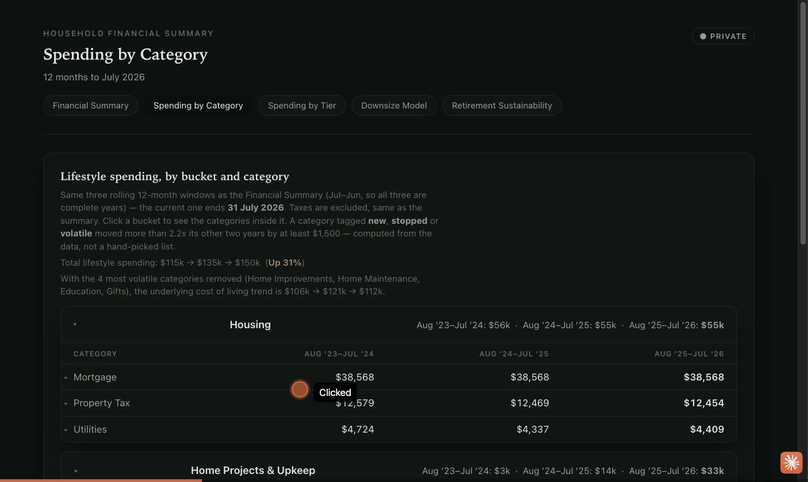
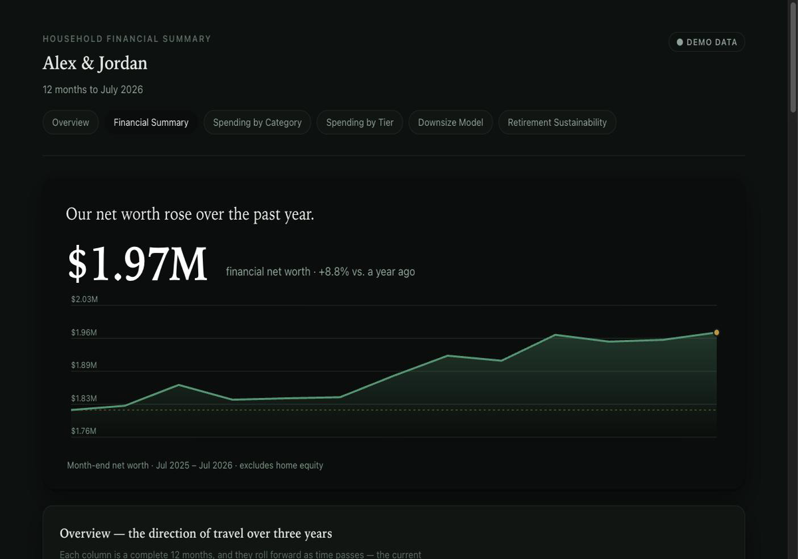
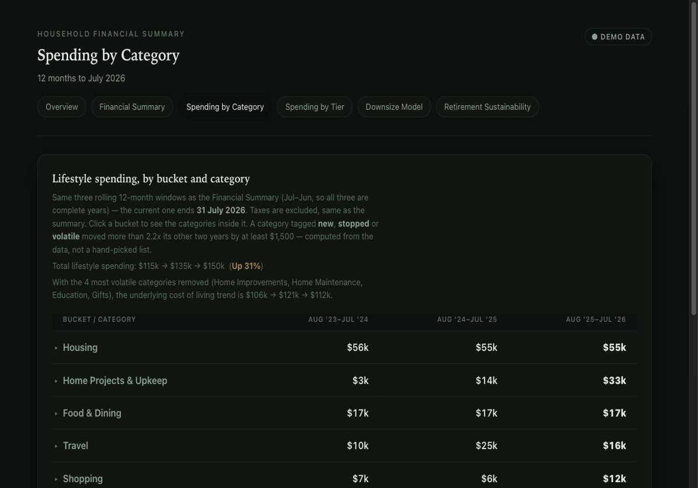
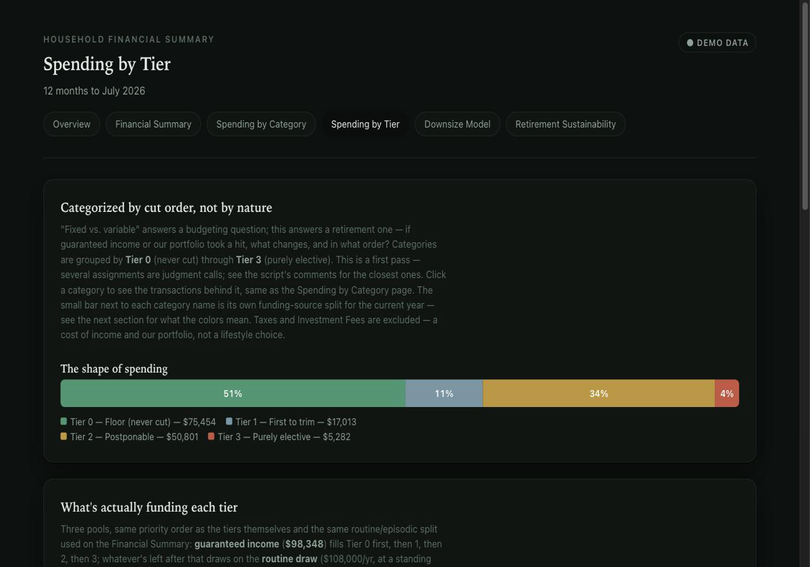
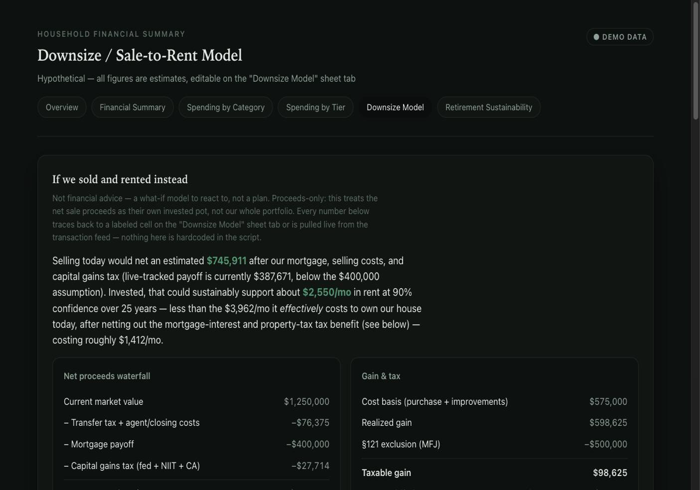
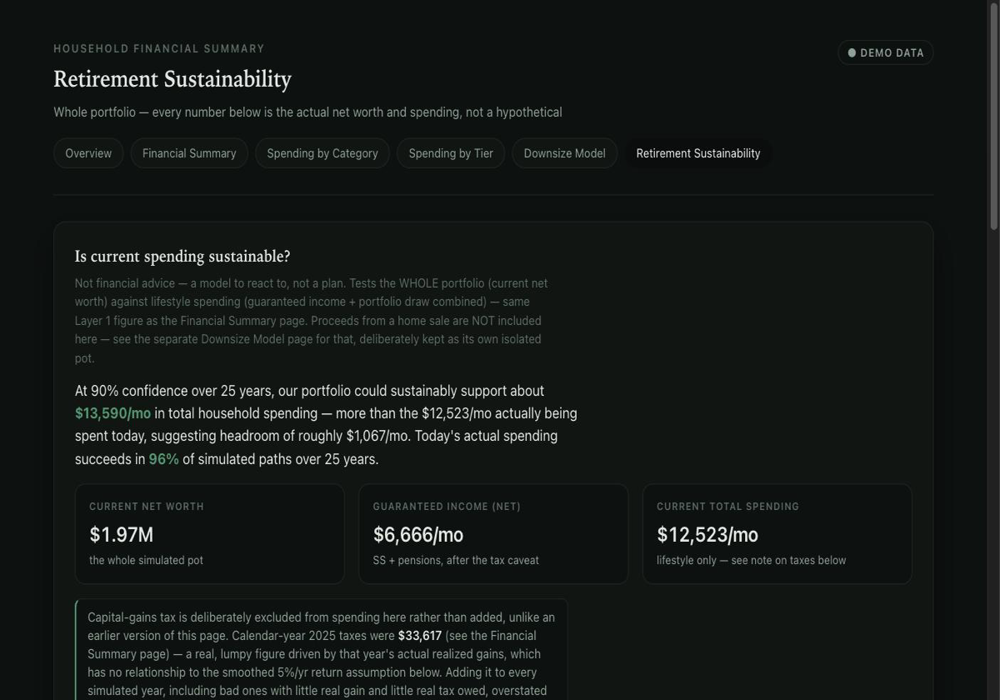

Everything below is live right now — click through five report pages built from a made-up household's numbers. Nothing to install, no account to create.
The data is entirely fabricated — there is nothing real to protect.Every number on these pages is clickable — this is a screen recording of the real site, not a mockup. Tap a spending bucket and it opens into the categories inside it.


Net worth and a three-year income/spending trend, with guaranteed income kept separate from portfolio draw.
Open →
Three years of spending, grouped into buckets, with unusual categories flagged automatically — not hand-picked.
Open →
Every expense ranked by how easily it could be cut, and exactly which income pays for which tier, in order.
Open →
"If we sold the house today, could the proceeds sustainably cover rent?" — with real tax and mortgage math, not a rule of thumb.
Open →
Given the whole portfolio plus guaranteed income, what spending actually holds up — at what confidence, over 20 to 50 years.
Open →The same numbers, rolled up with no individual transactions — safe to hand to a CPA or financial advisor.
Open →You're already doing it. Every page above is real and clickable, running on a made-up household ("Alex & Jordan") — nothing about it is connected to any real bank account, anywhere. There's nothing to sign up for and nothing of yours involved, so there's nothing to protect.
Want to see the raw spreadsheet this is built from? The sample Google Sheet is open to view — use File → Make a copy to get your own private copy to poke around in. That copy belongs only to you; nobody else can see it unless you choose to share it.
This is the real toolkit, running on your computer against your own actual Tiller sheet — same reports, but with your real numbers. It takes some one-time setup: download the code (free, open source) and follow the step-by-step guide to create a free Google "service account" — a robot identity Google lets you create so a program (not a person) can read one specific sheet.
What that exposes: you share your Tiller sheet with that one robot identity, the same way you'd share it with a person's email address — it can only ever see that one sheet, nothing else in your Google account. The one thing to be careful with is the downloadable key file Google gives you for it: unlike a password, whoever holds that file can use it, with no login prompt — so the habit that keeps it safe is simply never let it leave your own computer (don't email it, don't put it in a synced folder). If it's ever lost, one click in the Google Cloud console revokes it instantly. Everything else — your data, the reports it builds — stays entirely on your own machine, never sent anywhere.